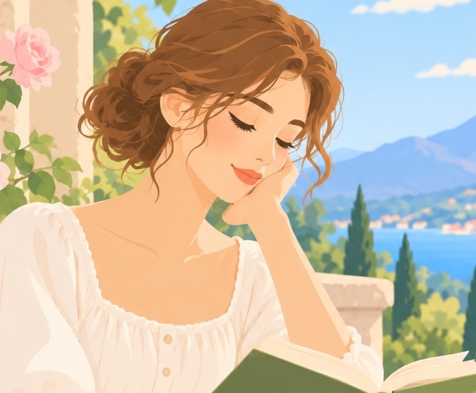
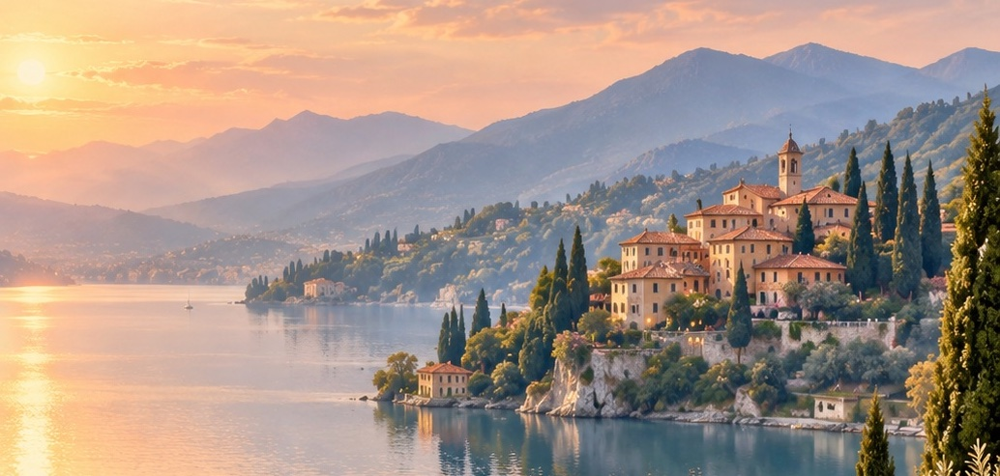

Introduction
"Sonnet 18" is a sonnet written by English poet and playwright William Shakespeare. The poem was likely written in the 1590s, though it was not published until 1609. Like many of Shakespeare's sonnets, the poem wrestles with the nature of beauty and with the capacity of poetry to represent that beauty.
Praising an anonymous person (usually believed to be a young man), the poem tries out a number of clichéd metaphors and similes, and finds each of them wanting. It then develops a highly original and unusual simile: the young man's beauty can be best expressed by comparing him to the poem itself.
Sonnet 18: Shall I compare thee to a summer’s day?
Shall I compare thee to a summer’s day?
Thou art more lovely and more temperate:
Rough winds do shake the darling buds of May,
And summer’s lease hath all too short a date;
Sometime too hot the eye of heaven shines,
And often is his gold complexion dimm'd;
And every fair from fair sometime declines,
By chance or nature’s changing course untrimm'd;
But thy eternal summer shall not fade,
Nor lose possession of that fair thou ow’st;
Nor shall death brag thou wander’st in his shade,
When in eternal lines to time thou grow’st:
So long as men can breathe or eyes can see,
So long lives this, and this gives life to thee.

Summary
Should I compare you to a summer's day? You are lovelier and more mild. In May rough winds shake the delicate flower buds, And the duration of summer is always too short. Sometimes the Sun, the eye of heaven, is too hot, And his golden face is often dimmed;

And beauty falls away from beautiful people, Stripped by chance or nature's changing course. But your eternal summer will not fade, Nor will you lose possession of the beauty you own, Nor will death be able to boast that you wander in his shade, When you live in eternal lines, set apart from time. As long as men breathe or have eyes to see, As long as this sonnet lives, it will give life to you.